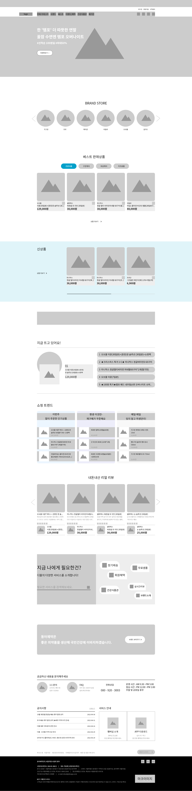

#ffffff
DMALL(디몰)
동아제약이 판매하는 생활 건강 브랜드를 모아둔
공식 사이트 디몰을 리뉴얼 하였습니다.
[MAIN , SUB , LOGIN , JOIN]

RENEWAL
기존 사이트는 레이아웃 간격이 좁고 제품 이미지의 크기가 작았고 슬라이드 이벤트가 여기저기 있어 복잡하게 느껴지고 사용자의 시선을 끌기 아쉬웠습니다.
18가지 브랜드가 입점되어 있었지만 메인페이지에서 사용자들이 동아제약의 브랜드 종류를 알기가 어려웠고, 메뉴 부분에서는 클릭을 해야 볼 수 있었기 때문에 사용성이 조금 떨어졌습니다.
이러한 점들을 참고하여 메뉴를 드롭다운 형식으로 변경하고 넓고 시원한 레이아웃과 이미지 크기에 초점을 두어 사용자가 제품의 정보를 편하게 확인하고 구매할 수 있도록 기획, 제작하였습니다.
안보이는
브랜드종류
촘촘한
레이아웃
한눈에
보이게
깔끔하고 넓게
COLOR
디몰의 포인트 컬러를 사용하여
깔끔하면서도 밝은 느낌을 주었습니다.
#000000
#00A0CA
FONT
가독성 좋은 폰트를
사용해 주었습니다.
Noto Sans
노트산스
RESOLUTION
1920 해상도에서 컨텐츠가 직관적으로 잘 보일 수 있도록
양쪽 여백을 충분히 주어 1180px로 제작하였습니다.
WIREFRAME

01
헤더 배너
상단에 이벤트 배너를 만들어 이벤트 정보를 전달합니다.
02
LNB와 GNB
메뉴에 마우스 오버 시 메뉴가 드롭다운됩니다.
GNB는 메타포으로 표현합니다.
03
메인 비주얼
브랜드별 진행중인 이벤트를 배너에 넣습니다.
바로가기 버튼을 만들어 사용자의 궁금증을 해소할 수 있도록 하였습니다.
04
브랜드 영역
18개의 브랜드를 swiper를 사용하여 slide로 구현합니다.
이미지에 마우스 오버 시 로고이미지로 변경됩니다.
마우스 클릭 시 해당페이지로 이동합니다.
05
베스트 상품
카테고리별 베스트 상품을 tab으로 분류합니다.
마우스 오버 시 불투명도가 적용됩니다.
06
신상품
swiper를 사용하여 slide로 구현합니다.
마우스 오버 시 불투명도가 적용됩니다.
07
이벤트 배너
현재 진행 중인 이벤트를 배치합니다.
08
지금 뜨고 있어요
최근 일주일 동안 가장 많이 나간 제품을
swiper를 이용하여 나열합니다.
오른쪽 리스트가 순차적으로 fadeIn되고
왼쪽 이미지도 동시에 변경됩니다.
09
쇼핑 트렌드
많은 사용자가 관심 있는 카테고리 3개로 분류하고
인기 상품을 진열합니다.
마우스 오버 시 밑줄과 이미지 불투명도가 적용됩니다.
10
리뷰
메인사이트에서 리뷰를 바로 볼 수 있게 만들었고
swiper를 사용하지 않고 j.Query로 구현하였습니다.
리뷰 밑에는 해당 상품을 진열합니다.
11
디몰 서비스
디몰이 제공하고 있는 서비스입니다.
마우스 오버 시 확대되는 애니메이션을 제공합니다.
input 검색기능으로 사용자가 원하는 서비스를 검색할 수 있습니다.
자주 찾는 서비스 3가지는 quickmenu로 만들어 aside에 한번 더 배치합니다.
12
브랜드 배너
동아제약 소개가 담긴 사이트로 이동합니다.
13
문의 영역
고객센터와 공지사항, 서비스 안내를 마지막에 두어
사용자가 문의하기 쉽도록 만들었습니다.
14
푸터
패밀리사이트 클릭 시 동아제약의 패밀리사이트가 모두 나열됩니다.
디몰의 정보와 로고를 넣어줍니다.
LOGIN PAGE
로그인 버튼 클릭 시 사이트 이동없이 팝업 창으로 열립니다.
JOIN PAGE
회원가입 페이지 이동 시 아이디에 focus가 가도록 설정합니다.
조건에 부합하지 않는 경우 경고창 대신 input창 하단에 글씨가 뜨도록 설정합니다.